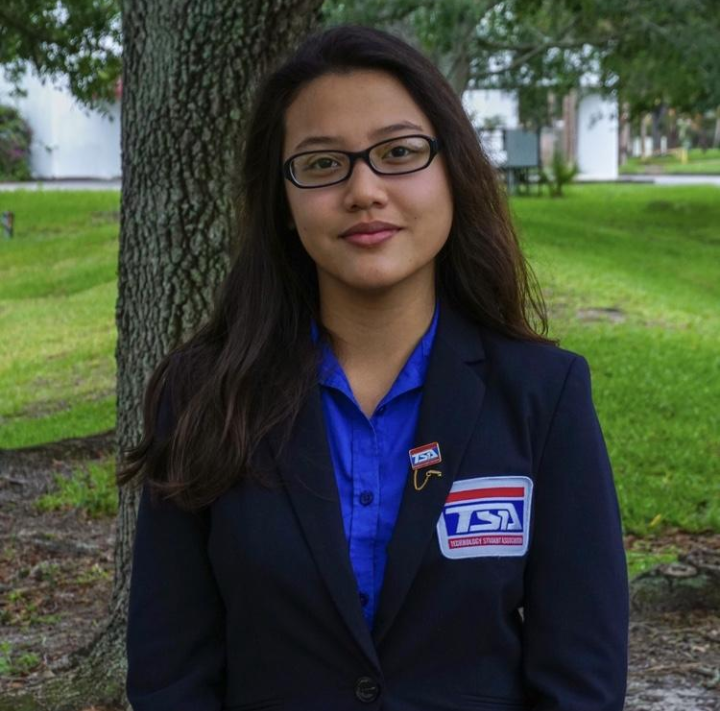
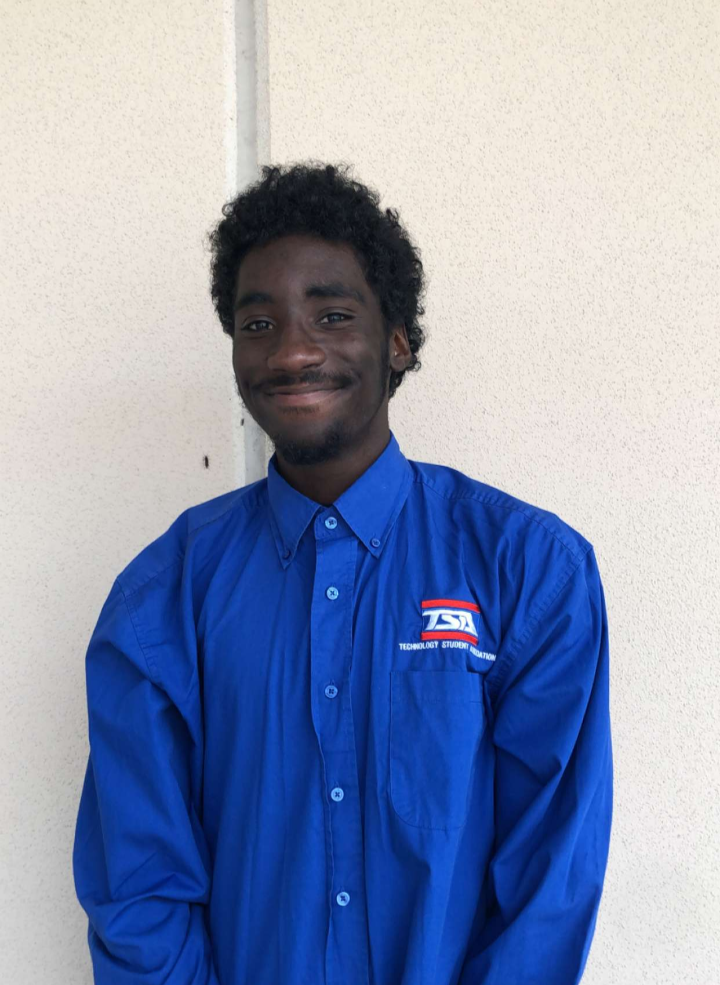
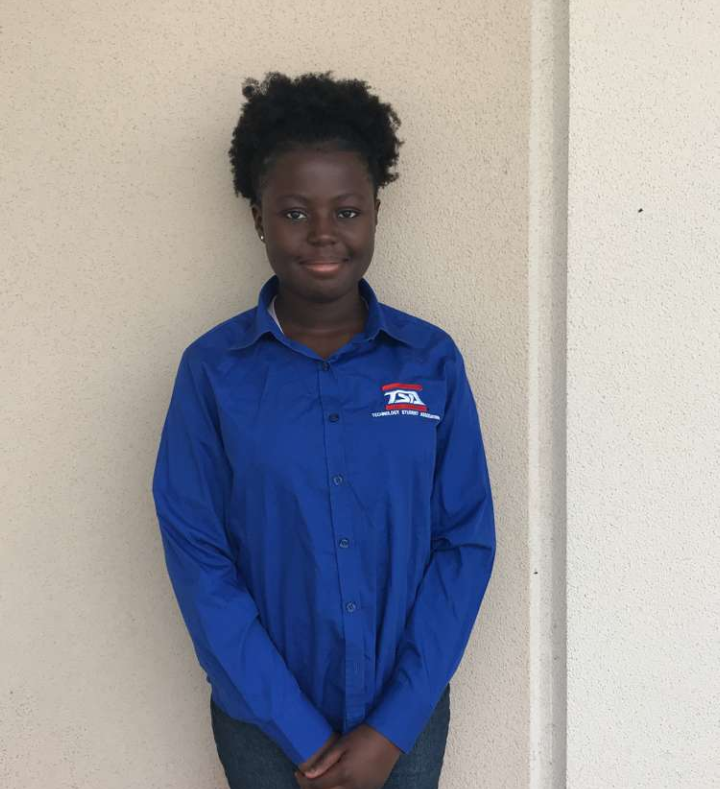
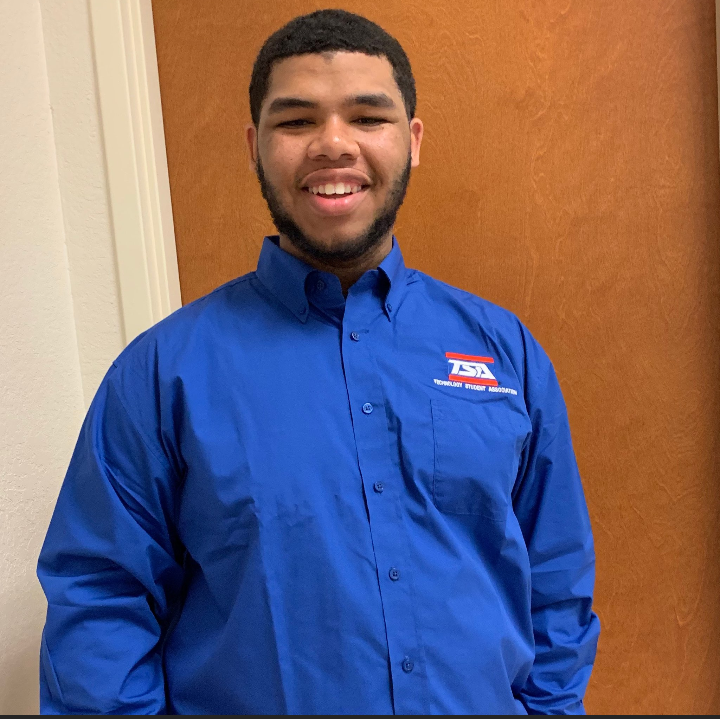
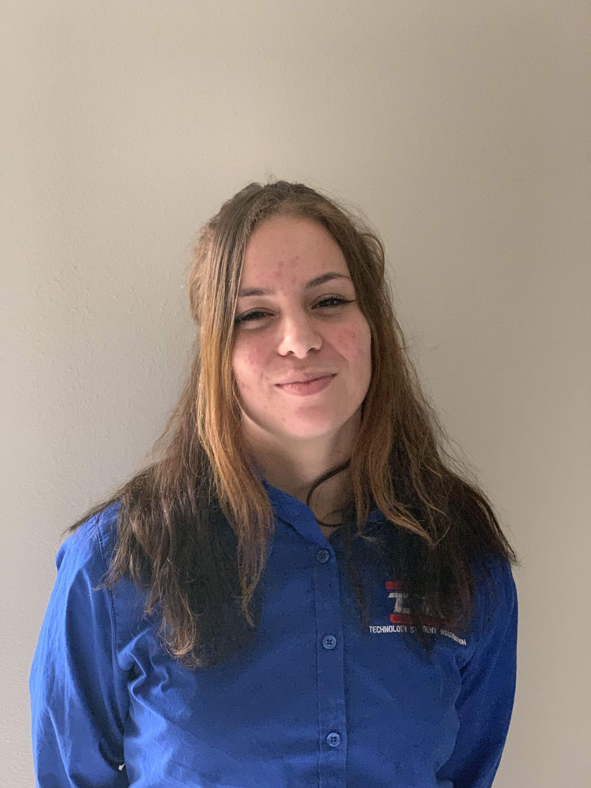

The Technology Student Association is a national, non-profit organization that works around creating the brightest future leaders in the STEAM (Science, Technology, Engineering, Art, Mathematics) fields. The organization hosts over 70 middle and high school competitions a year filled with over 250,000 members. The events at said competitions test the abilities of students nationwide, the TSA members can represent their school, community, and sometimes even their state.
TSA's motto "Learning To Lead In A Technical World" is what the organization promotes. The club has members in 48 out of the 50 states. Since TSA was chartered in 1978, almost 4,000,000 student members have participated in competitions, extracurricular activities, leadership opportunities, community service, and more. TSA is not only where students go to explore their interests, but it is also where bonds and connections grow between one another.
TSA is an open organization, meaning that they do not discriminate against anyone regardless of their age, religion, ethnicity, gender, disability, or race. TSA also has a 39% minority representation and a 100% likely to graduate from high school.
TSA Events
TSA has more than 30 competitive events that range from science to technology to engineering to art to math.
Some of the high school competitions are:
3D Animation, Animatronics, Architectural Design, Biotechnology Design, Board Game Design, Chapter Team, Children's Stories, Coding, Computer-Aided Design (CAD) Architecture, CAD Engineering, Computer Integrated Manufacturing, Cybersecurity, Debating Technological Issues, Digital Video Production, Dragster Design, Engineering Design, Essays on Technology, Extemporaneous Speech, Fashion Design and Technology, Flight Endurance, Forensic Science, Future Technology Teacher, IT Fundamentals+, Music Production, On Demand Video, Photographic Technology, Prepared Presentation, Promotional Design, Scientific Visualization (SciVis), Software Development, Structural Design and Engineering, System Control Technology, Technology Bowl, Technology Problem Solving, Transportation Modeling, Video Game Design, and Webmaster.
"Learning To Lead In A Technical World"
Who We Are
We are the HHS TSA club. We are a group of aspiring leaders that focus on our own interests, along with helping others find their own. This is our club's second year participating in various events. After previous years of gaining experience from TSA, the current secretary and president believed in continuing on the legacy and expanding the opportunities to other students. They thought, "Why not in our very own high school?" Our chapter specifically, is known for being eccentric, passionate, and full of support.
Although there was a problem with recruiting members at first, the determination of the clubs founders did not waver. After a technology fair and other methods of recruitment, the HHS TSA club has a loyal, motivated chapter of 24. The chapter participated in 22 events for the second time at the FL state conference. We will compete in 15 competitive events at the Washington DC National Conference from June 27th to July 2nd.
Creed
I believe that Technology Education holds an important place in my life in the technical world. I believe there is a need for the development of good attitudes concerning work, tools, materials, experimentation, and processes of industry. Guided by my teachers, artisans from industry, and my own initiative, I will strive to do my best in making my school, community, state, and nation better places in which to live.
I will accept the responsibilities that are mine. I will accept the theories that are supported by proper evidence. I will explore on my own for safer, more effective methods of working and living. I will strive to develop a cooperative attitude and will exercise tact and respect for other individuals. Through the work of my hands and mind, I will express my ideas to the best of my ability. I will make it my goal to do better each day the task before me, and to be steadfast in my belief in my God, and my fellow Americans.
The Grind Never Stops
Our Activities
Traditional Meetings:
Before the start of every club, we make sure that all of the needed members are present, meaning that the students who are involved in either "big" projects or non-on-site event. The president of the chapter will have bi-weekly check-ins on the other member's projects.
Chapter Meetings:
The meeting is started when seats are alligned in proper chapter team position. Each week, there is a new goal of the meeting that is strived to be resolved by the end of the meeting. Many things are discussed, including, how to improve efficiency throughout the club and make the best projects possible.
Freshman Day:
All the freshman come and we set up a booth and we introduce our club to them
Tech Day:
We showcase all of our projects during lunches with activities and enforce the projects to get the maximum effect.
Word of Mouth:
rec. from teachers
movie night
tv production:
on announcments
guest speaker: president speaks to classes
bonding: monthly activities
acs & beach cleanup
"We Feel Good Oh We Feel So Good Oh"
Student Projects
Improvise. Adapt. Overcome.
Our Officers

Michaela Chua
President
Michaela is the founder & president of HHS TSA. She started the club at her high school once she was enrolled for she wanted to share her love of TSA. She manages the weekly meetings and the weekly chapter team meetings. She informs the members of the club where they should be in their projects & offers advice on how to manage their time.

Isaiah Newton
Vice President
Isaiah is the Vice President of TSA and has been a member since the club was founded in 2017. He has a passion for events that have a theatrical element to them. The Vice President has a strict but efficient way of getting others motivated.
Natasha Marin
Secretary
Natasha is a founder and Secretary of HHS TSA. She is interested in fashion design and structural.
The secretary is highly respected in this organization due to experience and tactful methods of operation.

Shayne Delva
Treasurer
Shayne is the club's treasurer. She is interested in biology and engineering. She has been a member since the very beginning of TSA being founded at HHS. She keeps the club financially stable and aids the fundraisers.

Joseph-Andrew Jordan
Reporter
Andrew is the reporter and has been in the club since it has been founded. He has a passion for theatre and an interest in public speaking. The reporter helps with awareness to the club for recruitment and keeps the President up to date with any concerning matters.

Izabella Nesmith
Sergeant-at-Arms
Izabella has an interest in most hands-on projects that require thinking, such as webmaster. She is a newer member, coming in the club late for the current year. She assists the President with keeping the environment clean and friendly.
OUR COMPETITIONS:
FL TSA STATE CONFERENCE
The FL state conference was held on February 27, 2019. It is held at the Double Tree conference center each year around the end of February, beginning of March. This year, The state of Florida competed in over 30 events and the winners to certain events have the oppurtunity to compete further at the national TSA conference in Washington, D.C. and possibly win awards and scholarships. At the 2018-2019 Florida state conference, HHS TSA participated in 24 different events with 15 members. Each member had a minimum of 4 projects. A handful of members also participated in spirit night, earning 1st place in the lip synch competition.
NATIONAL TSA CONFERNCE:
The national TSA conference will be for the duration of 5 days from June 28th to July 2nd. The conference wil be held at the Gaylord National Resort at the National Harbor near Washington, D.C. Students will be visiting from all over the country competing in 30 diverse events. HHS TSA will be participating in 15 events, ranging from Children's Stories to Future Technology Teacher. The entire chapter team will be attending with an additional 3 members.
FL TSA LEADERSHIP CONFERENCE:
The FL TSA Leadership Conference was a meeting between the officers from a multitude of schools across Florida. HHS TSA and other participating school's TSA clubs would break up into what was called breakout sessions. Breakout sessions are rooms where a student ca learn skills such as how to improve chapter team, building objects and structures, and making/structuring resumes. There was big team bonding with all of the TSA schools, creating better commuication throughout the officers. HHS TSA participated in the lip synch competition, earning first place.
OUR AWARDS
Throughout the course of two years at HHS TSA, 21 members placed in a total of 4 events. The 2 winning teams from 2018-2019 states have an oppurtunity to place once more along with the remaining students participating in open events
Event:
1st Place Extemporaneous Speech ~ 2018-2019
3rd Chapter Team ~ 2018-2019
3rd Children's Stories ~ 2017-2018
3rd Forensics ~ 2017-2018